Author 1, author1 (at) cs.cmu.edu
Author 2, author2 (at) cs.cmu.edu
Author 3, author3 (at) cs.cmu.edu
Laboratory
Institute
Organization
Street Address
City, State, Country
Phasellus viverra nulla ut metus varius laoreet. Quisque rutrum. Aenean imperdiet. Etiam ultricies nisi vel augue. Curabitur ullamcorper ultricies nisi. Nam eget dui. Etiam rhoncus. Maecenas tempus, tellus eget condimentum rhoncus, sem quam semper libero, sit amet adipiscing sem neque sed ipsum. Nam quam nunc, blandit vel, luctus pulvinar, hendrerit id, lorem. Maecenas nec odio et ante tincidunt tempus. Donec vitae sapien ut libero venenatis faucibus. Nullam quis ante.
Table of Content
Exploratory Analysis and Questions
I decided to focus on the application data as I was more unsure of what I could do with the collection data. Others in the data lab seemed to have more ideas of how to clean up and visualize the collection data as well. Some basic questions that arose from simply looking at the application data were which countries or regions were most represented, whether there were large differences between host and archival countries, and how applications changed across cohorts (were more, less, or the same countries applying). I also thought about patterns that might exist between material type and region. I started off by using Tableau to create different types of visualizations for each cohort separately. These included maps of host and archival countries, bar charts for applications that were funded and not funded by region, bar charts for material types, and tables for host countries and the archival countries that they were applying to fund projects in.
Some examples of the initial visualizations created in Tableau

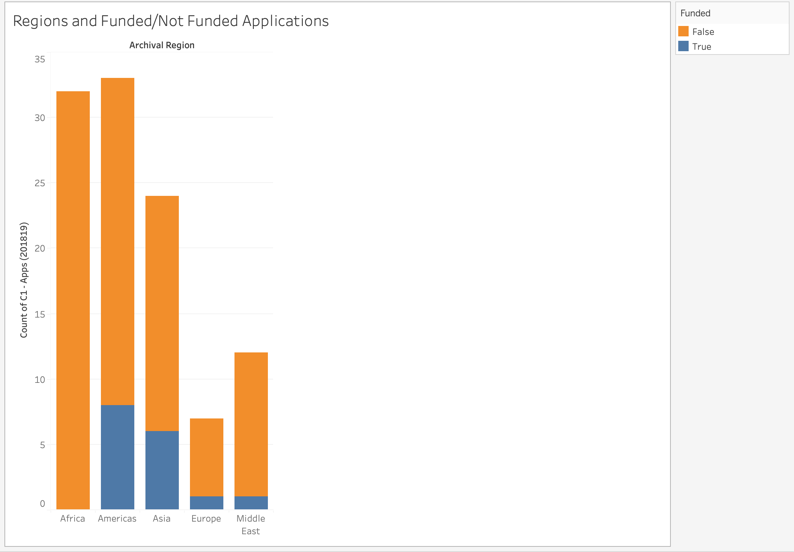
I also used Python and the Pandas library to get exact statistics of new countries that were present in each cohort (the code is not the cleanest or most efficient).
Code snippets of initial exploratory analysis
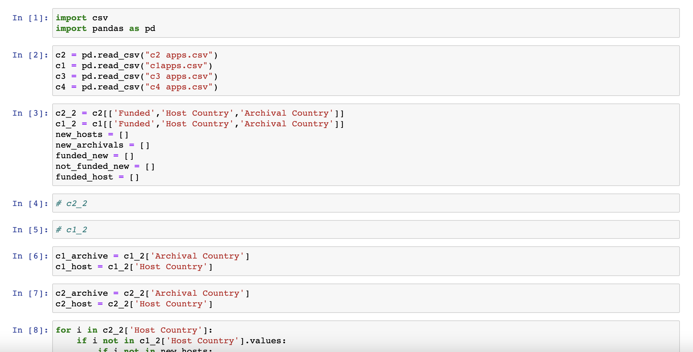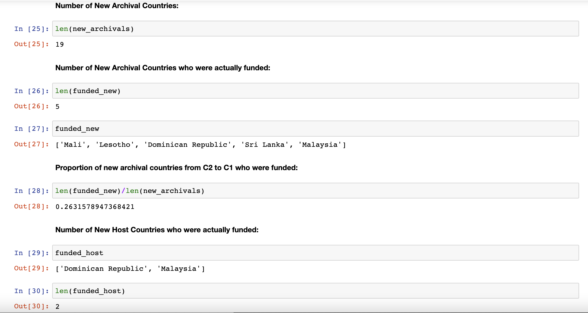
After presenting my initial work to the rest of the data lab, discussing new questions that had come up, and seeing what everyone else had done, I decided to focus on creating network graphs of host and archival countries to illustrate any patterns in and across cohorts in this area.
Data Processing
Miscellanious
In general, I did not have to clean up the data much. There were only small differences between datasets that I had noted. In my exploratory analysis of the data, I noted that Cohort 1 had “Ephemera” as a material type, but later cohorts did not. However, I did not continue to work with the material types so I did not address this. In my work to prepare the data for the network graphs and computing more statistics, I removed NaN values at the bottom of some of the application datasets using dataframe indexing in Python. One cell in Cohort 2’s dataset used “México” while all other instances used “Mexico”, so I standardized the spelling across datasets. Other examples were fixing “Nigeria” was entered as “NIgeria” in one cell, and similarly standardizing “Republic of Congo” and “Republic of the Congo”. I made these small changes in Excel.
Cohort 5 Data
Because we received the Cohort 5 application data towards the end of Spring Quarter, more data processing had to be done for that dataset. The dataset already contained detailed regions such as Southeast Asia and Latin America, but the data from other cohorts only had the more general “Americas” and “Asia”. I had already created the network graphs for the previous cohorts and written code to calculate their statistics, so to make my visualizations uniform and to be able to use the same network preparation code that I had written, I added in the more general host and archival regions to the data. I also standardized the country names as some were written in the country's native language which some viewers might not understand. I also added a Host Country column based on the host institution recorded in the data.
Prepping for Network Graphs
I used gephi to create the network graphs. To do this, I had to transform the data into “nodes” and “edges” files. The nodes files contain the country names as a label, a number assigned to it as an ID, and any other attributes to categorize the countries. The edges files contain source IDs, target IDs, and the types of connections between them. I had to change the data from country names to unique number identifiers and show the relationship between host and archival country using these number IDs. To do this, I used the Pandas library in Python again. I created a masterlist of nodes by creating a list of every unique host and archival country and looping through it to create a dictionary of countries and their IDs. I also created a dictionary matching each country to its region. At first, I just created one node .csv file for all cohorts using the node dictionary, but that gave me issues when exporting the graphs to be embedded into a website. All the nodes would appear on the graph when exported, even when nodes not present in the particular cohort had been filtered out in the gephi software. So, I kept the nodes dictionary but created separate node files for each cohort using a similar process as when creating the masterlist. These node files included region as an attribute so I could color-code the graphs by region.
To create each edge file per cohort, I looped through each country in the Host Country and Archival Country columns of the dataframes, checked for that country’s ID in the node dictionary, and appended the ID value to a list. I then wrote the list of host IDs, the list of archival IDs, and a list filled with the string ‘Directed’ into three columns in a .csv file. This is because each connection was directed, an application from one host country to fund work in an archival country.
Prepping data code snippets
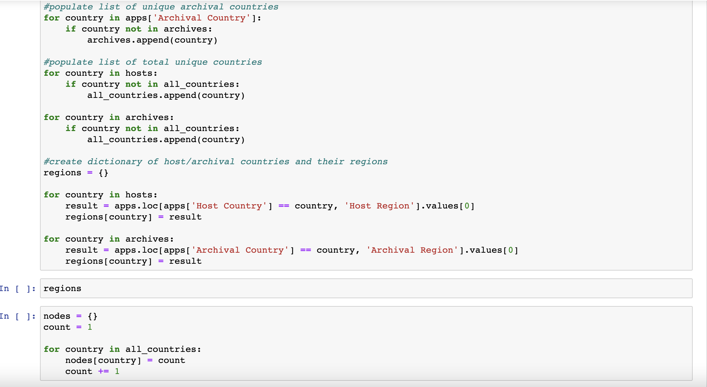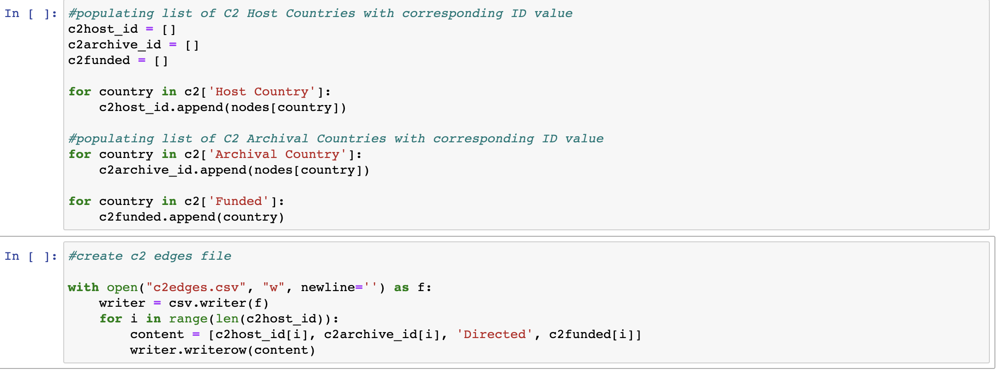
Gathering Application Data Statistics
Aside from preparing the data for gephi, I also used Python to gather statistics on total applications, funded applications, applications which were invited for detailed, applications by region, and applications where the host and archival country were the same and vice versa. To get applications by region, I simply looped through the “Host Region” columns of the dataframes. To get applications which were invited for detailed, I copied the original cohort application dataframe and dropped rows which were False in the “Invited for Detailed” column. To check whether the host and archival countries were the same, I applied a function to each dataframe which created a new column stating True if they were the same and False if not.
Gathering statistics code snippets
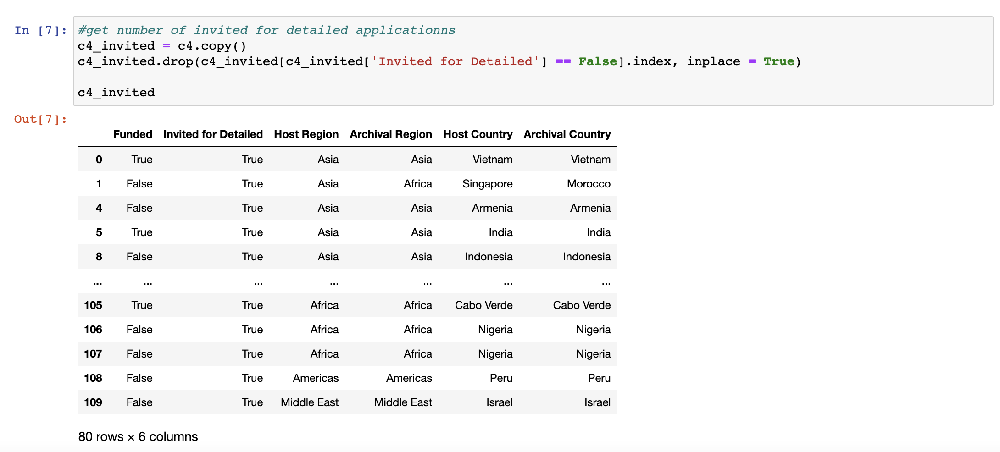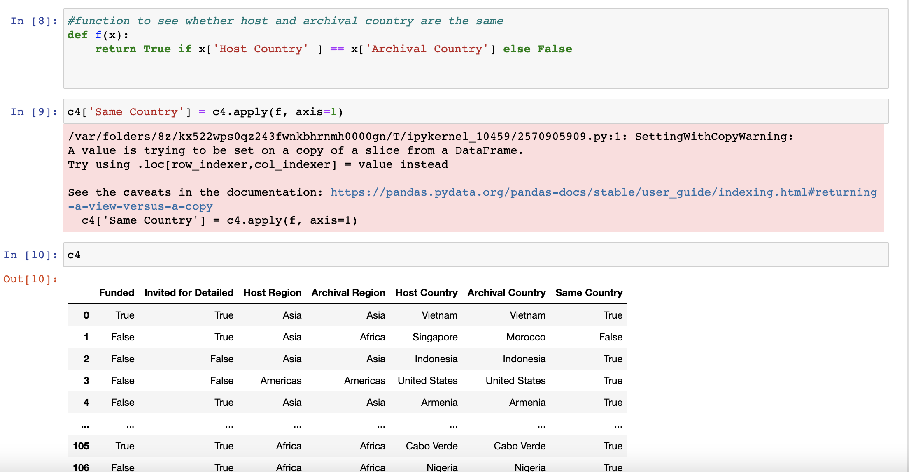
Much of the data processing done in Python, especially computing the statistics, was quite rudimentary. I just wanted to get the job done initially. However, I am looking to make the code more efficient now that I have created my graphs and computed the statistics. I will add how I changed the code to make it more robust in the future below.
Creating Network Graphs
After importing the nodes and edges files into gephi, it initially looks like this:
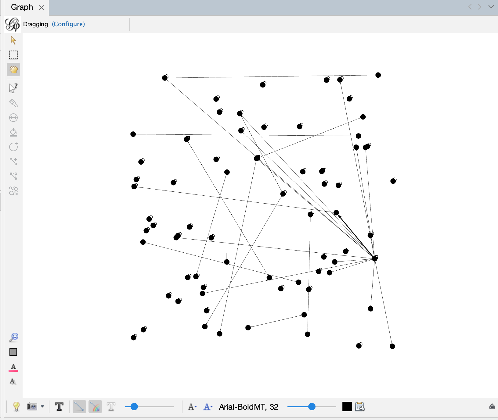I classified each node by color in terms of region, and each edge (line) is colored the same as the host country. The size of each node reflects its out-degree, that is how many applications the country has made. The size of the label of the country name also reflects this. Nodes with lines connecting them indicates a relationship between a host country and an archival country in an application. Nodes that do not have any lines represent countries that are both host and archival in their application(s). I chose the Fruchtermann Reingold layout as it shows the networks most clearly and simply.
Cohort 1 Network in gephi
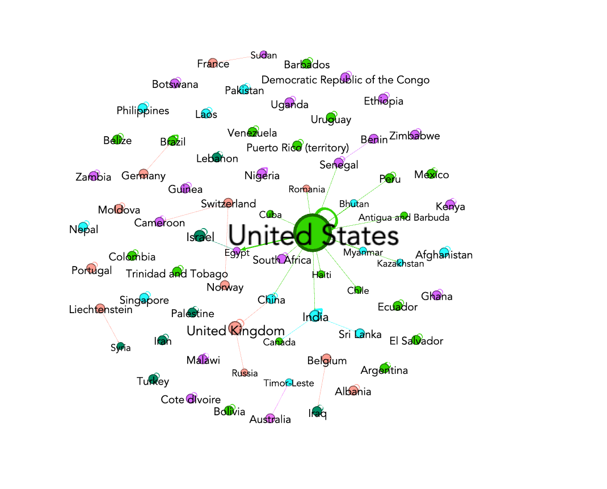In gephi, nodes that have an outline of the node behind them represent “edges” where the host and archival country are the same. I liked the interactivity that was available in gephi; I was able to zoom in and out and hover over nodes which highlighted them and their connections.
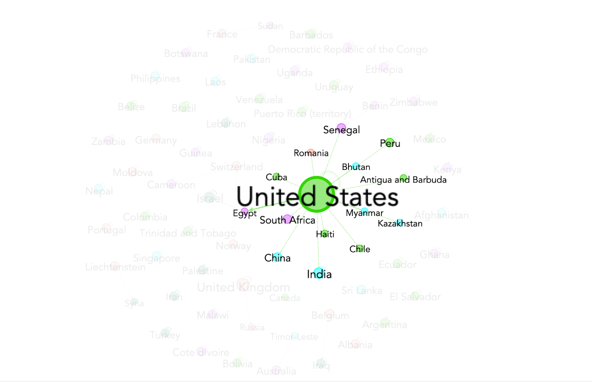However, when exporting the graphs as PNGs, PDFs, or SVG files, I lost the interactivity.
Exported Cohort 1 network graph as a PNG
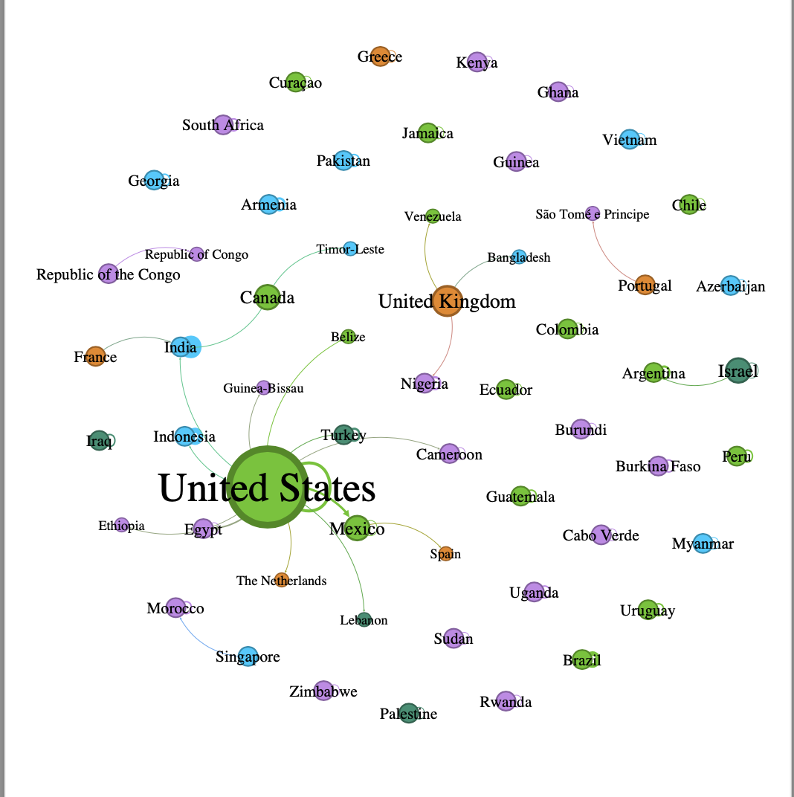So, I installed a plugin allowing me to export my graphs to embed them into websites. They do not look exactly the same as when they are in gephi, but they are still interactive (allow zooming in and hovering to highlight) and also can be viewed by attribute (region). On each page are some statistics of the cohort applications. Clicking on the “More about this visualization” shows a pop-up explaining how to read the graph. The group selector highlights nodes by region. I have embedded my graphs below.
Network Visualizations
Here are the network graphs created using gephi and exported using Sigma.js. There are graphs for each cohort's applications as well as only the funded applications per cohort. There is also an aggregated graph with all funded applications across cohorts 1 through 5.
- On the left are some statistics on regions as well as host and archival countries.
- Clicking on the "More information" text shows a pop-up explaining how to read the graph.
- Selecting by group highlights nodes by region.
- Hovering over nodes highlights them and their connections, and clicking does the same thing.
- The size of each node/label and the thickness of the lines reflect how many applications that host country has sent out
- Each node and line is color coded: Purple/Africa, Green/Americas, Blue/Asia, Orange/Europe, Teal/Middle East, Pink/Oceania
- Each line has an arrow to show the host country pointing to the archival country, and lines are color coded by host country
- Nodes with no lines going in or out represent countries that are their own host and archival country
Cohort 1 Network
Cohort 1 Funded Network
Cohort 2 Network
Cohort 2 Funded Network
Cohort 3 Network
Cohort 3 Funded Network
Cohort 4 Network
Cohort 4 Funded Network
Cohort 5 Network
Cohort 5 Funded Network
C1-C5 Funded Network
The original and unchanged exported graphs look like this when hosted on a website:
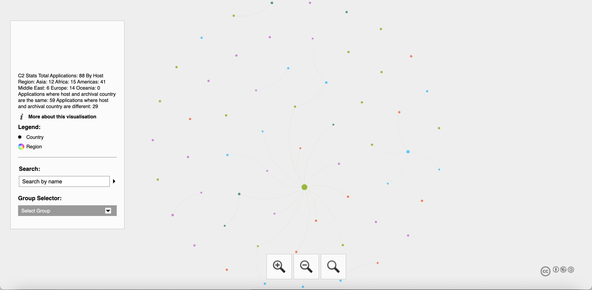
Limitations
I had played around with potentially identifying host institutions on my network graphs. However, I could not find a good way to do this on gephi. I attempted to add the host institution as another column in the nodes .csv file, but the only way I could display them resulted in a cluttered and unreadable visualization, especially in the case of Brazil which had multiple host institutions in Cohort 2:
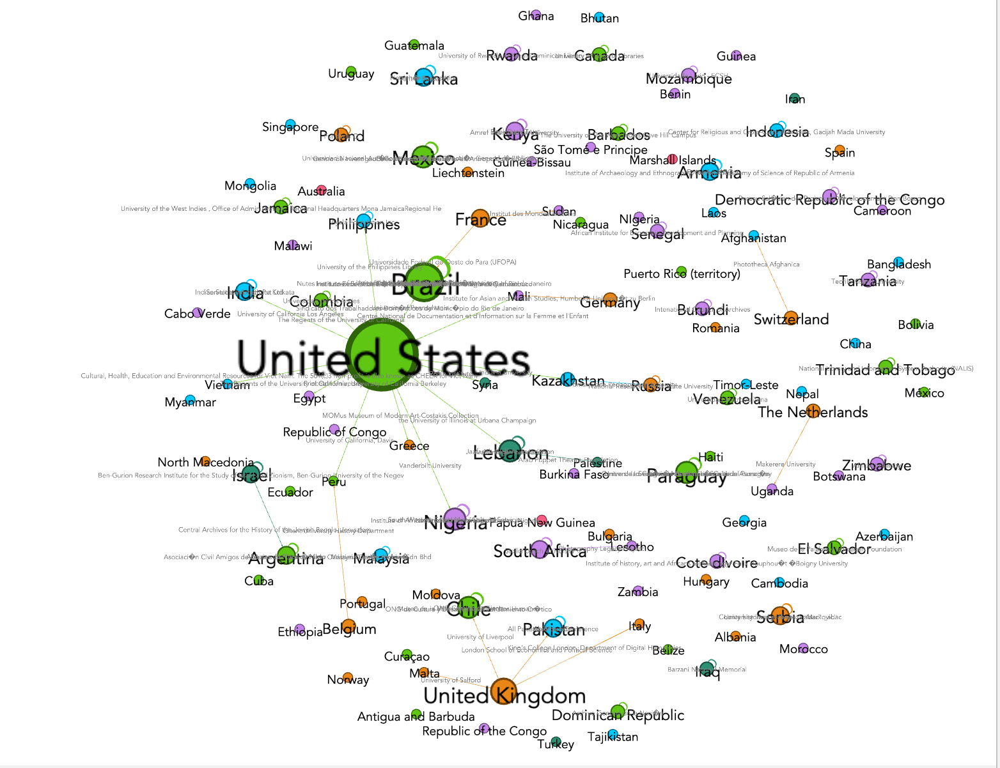I attempted to export the graph as an SVG file and move around the host institution names, but it was still quite messy so I decided not to include it and use other tools to hopefully display this data better.

I also thought that being able to highlight which applications were funded on the visualization would be useful, but I was not able to implement this either which is why I created separate visualizations for only the funded applications. This is because I am only able to add attribute columns in the nodes file, and the nodes file contains one of every unique country and its number ID. So, there was no way to really add in a “Funded” column which would be accurate.
Finally, I prefer the look of the visualizations in gephi the most. I thought that the style and functionalities would be preserved when embedding the graphs into a website. One limitation of embedding the graphs in a site is that the arrows showing the direction of host country to archival country are missing. In these cases, the viewer can use the size difference of the nodes or can infer based on the countries which one is which. Although the visualizations look the most aesthetically pleasing to me in gephi, I believe that they can still be clearly read and analyzed when embedded in a website.
Findings
Some obvious patterns can be seen across cohorts, such as the United States sending the most applications in each cohort and having multiple being funded each year. A majority of applications every year come from countries which are both host and archival. Cohort 4 was the only year where applications from the Americas were not the majority being funded (applications from Africa were). Oceania consistently sends the least amount of applications.
These visualizations illustrate both the countries and regions that apply in each cohort, but also relationships between host and archival countries. They can help prompt further questions and exploration into these topics.
Findings
Some obvious patterns can be seen across cohorts, such as the United States sending the most applications in each cohort and having multiple being funded each year. A majority of applications every year come from countries which are both host and archival. Cohort 4 was the only year where applications from the Americas were not the majority being funded (applications from Africa were). Oceania consistently sends the least amount of applications.
These visualizations illustrate both the countries and regions that apply in each cohort, but also relationships between host and archival countries. They can help prompt further questions and exploration into these topics.